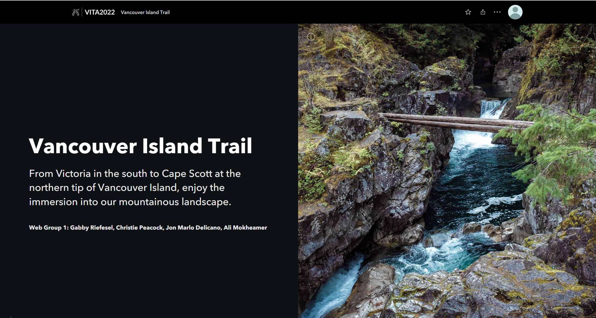
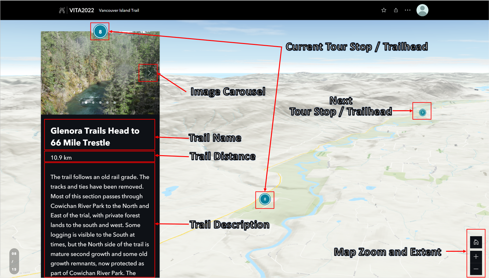
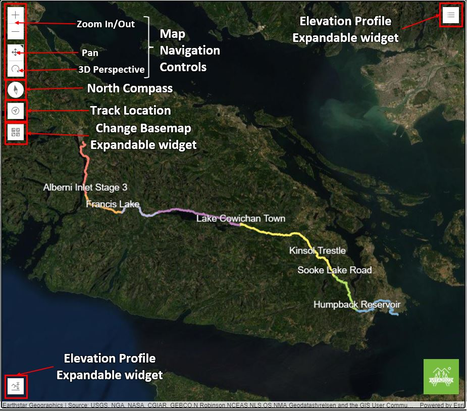
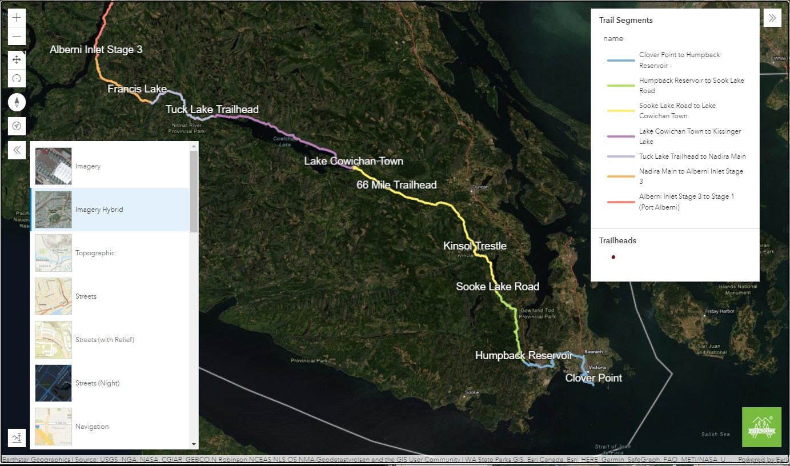
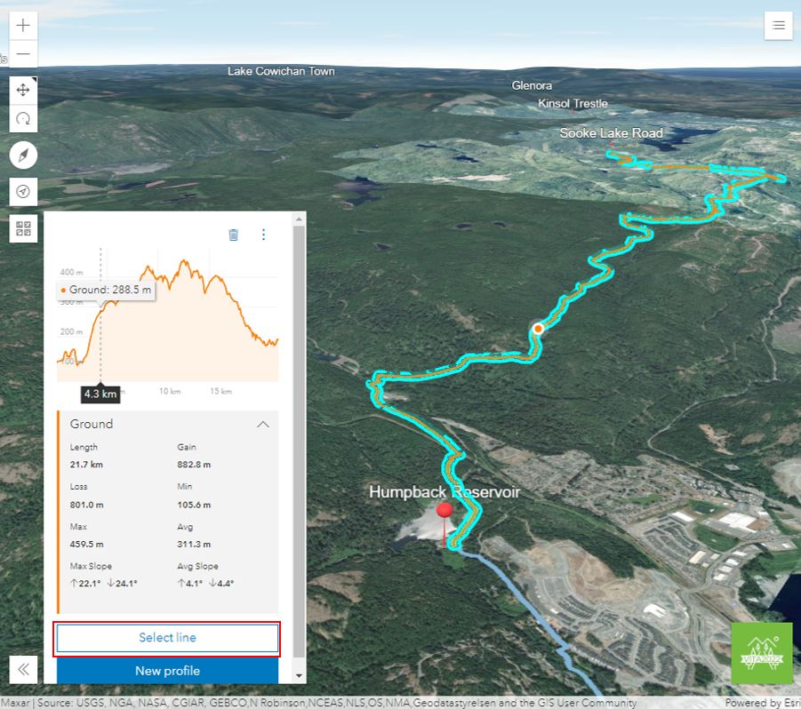
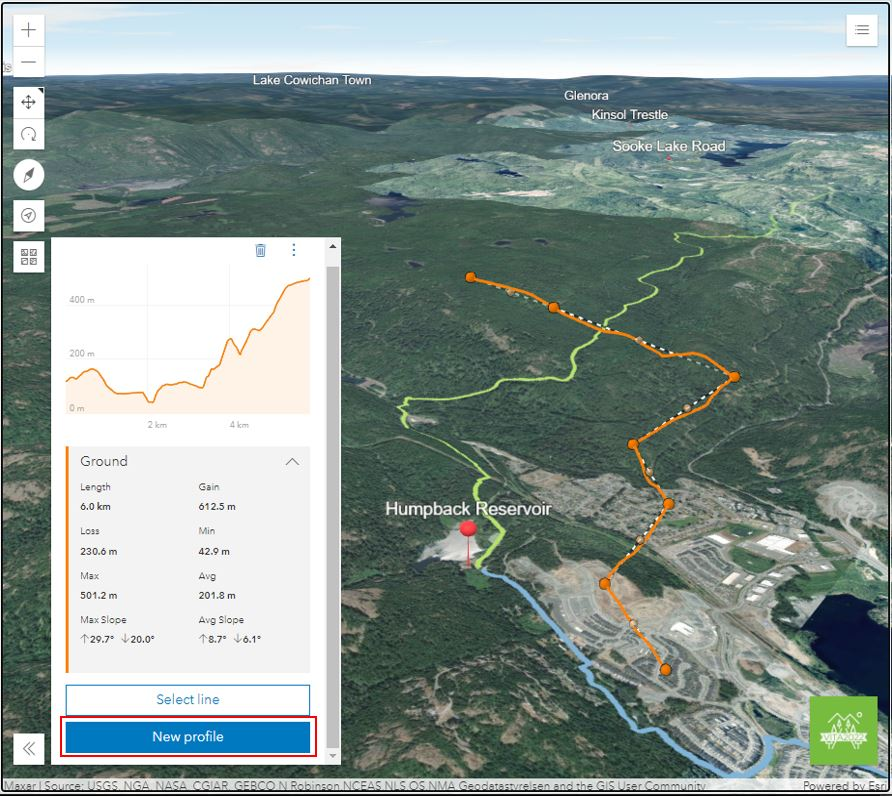
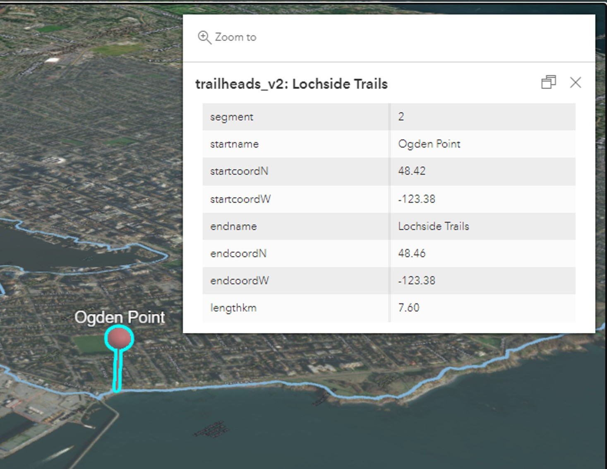

StoryMaps (Guided Tour)
The first web configurable solution we produced to showcase the Vancouver Island Trail system is an interactive StoryMaps which takes the user through a guided tour of the southern section of the Vancouver Island Trail. The StoryMaps covers 160 kilometres of the 14 trail sections between the Clover Point Trailhead to the end of the Stage 3 Alberni Inlet Trail. This solution serves as a guided tour through the completed sections of the Vancouver Island Trail and could be used for promoting the trail system and trip planning, but not for navigational purposes. The guided Map Tour takes the user from trailhead to trailhead, displaying photos from the trail, elevation profile graphs, trail distances, and trail descriptions. The 3D perspective of this Map Tour highlights the diverse topography hikers will travel through on this mountainous trail system. The base map chosen for this solution features trail routes, trailhead points, and useful terrain features such as contour lines.
 Evaluation of Addressing the Problem Statement
The overall StoryMaps approach acted as a building block in our approach to configuring a web solution for our problem statement. The StoryMaps produced a guided tour of the Southern section of the Vancouver Island Trail System to help inform users of trails to help plan hiking trips. The solution, however, lacked some important details for planning hikes that we could not add to the StoryMaps solution due to the limitations of the application.
The StoryMaps application itself has a point-click interface with limited ability for developers to alter the services the application provides. For example, we originally wanted to create a data-driven approach from the trailhead point feature layer to ensure trailheads were as accurate as possible throughout the Map Tour. As discussed on the Methodology and Processes page, the data-driven approach to a Map Tour did not allow for 3D visualization, nor did it allow for configurable design for trail details inside panels. In the end, we decided that where the StoryMaps is a guided tour and is not for navigation, we accepted a less accurate non-data-driven Map Tour with manual trailhead placements.
Another limitation was that the StoryMaps Map Tour did not pan along the trail automatically as it panned from trailhead to trailhead, which limited the viewing of the actual trail section between trailheads. It would have been ideal if a data-driven approach accepted polyline data so that the Map Tour tracked along with the trail data in between trailheads. To ensure that a user could truly explore each trail section in an interactive map, we adjusted the 3D perspective to ensure that the Map Tour panned across the trail between each trailhead. The user could also pan around the map manually if desired but ideally having the tour follow the trail polyline would have ensured a more informed demonstration of the trail.
Another limitation we flagged is the lack of ability to create elevation profiles in StoryMaps. When planning a hike, it is often desired to know the trail elevation profile. Unfortunately, within StoryMaps, developers cannot add in a widget to display the elevation profile of a polyline. To account for this StoryMaps limitation, we created elevation profiles in ArcGIS Pro for each trail section and added in trail profile graphs as images into the image carousel on the side panel. We implemented elevation profiles into our second more interactive solution, the ArcGIS API for JavaScript, as discussed below.
ArcGIS API for JavaScript Map (Self-Guided Tour)
The second solution we have developed for this project is a map that uses ArcGIS API for JavaScript to add more custom features. This includes a legend, navigational controls (pan, rotate, zoom) in a 3D perspective, Changing Base Maps, Location Tracking, custom elevation profiles and expandable widgets for better interface viewing. This solution serves as a self-guided tour to complement the StoryMap Guided Tour. Overviews of this interface are displayed below:
Interface navigation:
Expandable Widgets for Legend and Base Map Menu:
3D perspective exploration and the ability to see elevation profiles and other route details from an existing line feature that is Selected:
3D perspective exploration and the ability to see elevation profiles and other route details from a new line feature that is Sketched by the user (see orange line below):
Trail heads (with significant 3D symbol) with a simple pop-up including data from the trailhead hosted feature layer:
Evaluation of addressing Problem Statement
This interactive web map provides the user with general details of the Vancouver Island Trail. The ability for the user to explore in a 3D environment and with different base maps gives the user a bird’s eye view experience of the trail, which is helpful to acquire a good understanding of the general surroundings. More importantly, the elevation profile feature provides even more details of the trail should they want to know more technical specifications such as elevation gain and length. All in all, a user is adequately informed of the Vancouver Island Trail.
With that in mind, this application is ideally suited for prospective hikers who require a general understanding of the trail. Actual, on the ground-hikers planning a multi-day hike can still find use in this application, especially with a location tracker feature and the mobile-friendly interface.
It is understood that more can be done to improve the effectiveness of informing the user. Firstly, expanding the functionality to include more trail data (such as trail difficulty level, waypoints, points of interest, boundaries, etc) however that is contingent on the availability of data at the present. Otherwise, more can be done to make the application more visually appealing and dynamic. Currently, it is a full-page map with expandable widgets. Though this is sufficient for keeping the interface clean, information/data is easier to interpret when provided in an easy-to-read format. A future investment could be to find a resolution for custom Pop-ups, which would help display tabulated data better.